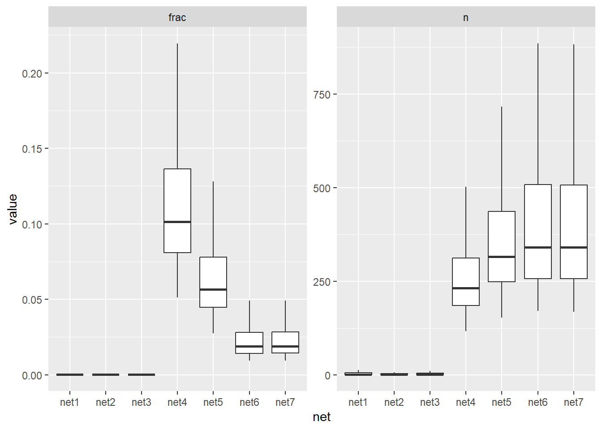

Code
password <- Sys.getenv("BLUESKY_APP_PASS")
identifier <- Sys.getenv("BLUESKY_APP_USER")
auth_object <- get_token(identifier, password)
token <- auth_object$accessJwtLasse Hjorth Madsen
May 12, 2025
We collected a couple of nets, some converged in a reasonably about of time, some didn’t. I’m wondering how they’re different and if I can draw any conclusions about the best settings. And perhaps if the current algoritm is good or should be tweaked.
I’m looking at:
net1, the currently published one. As I remember, it ran for a couple of days before converging. Likely an absolute threshold of 40. (Threshold means the number of followers you must have, within the network, to be included.)
net2 ran for ~48 hours without converging, collected a lot more connections, but a lot fewer members. I guess this means that people have many more connections, but not necessarily within the science community, meaning that it takes longer time to identify our network of interest.
net3, however, ran for ~60 hours without converting, this time using a relative threshold of 0.005. Again a lot more connections, almost as many members as net1. Consistent with the idea that people have more connections.
net4 converged after ~5 hours, with a relative threshold of 0.05, so much more restrictive. It is also a lot smaller.
net5 converged after ~12 hours, with a compromise threshold of 0.03
net6 finished after ~32 hours, with a threshold of 0.01, by reaching 30 iterations, the maximum allowed for. (Maybe increase this.)
net7 finished after ~24 hours, with a threshold of 0.01, after 46. (Wonder why this was quicker that net6?)
Relative thresholds in summary: 0.005 took forever; 0.05 took about 6h to converge; 0.03 about 12h; let’s try maybe 0.01 or 0.02.
# Get saved profiles
profiles <- readRDS("../data/research_profiles_2024-10-24.rds")
# Get saved net and profiles
net1 <- readRDS("../data/research_net_2024-10-31.rds")
net2 <- readRDS("../data/research_net_2025-04-23.rds")
net3 <- readRDS("../data/research_net_2025-04-25.rds")
net4 <- readRDS("../data/research_net_2025-04-28.rds")
net5 <- readRDS("../data/research_net_2025-04-30.rds")
net6 <- readRDS("../data/research_net_2025-05-02.rds")
net7 <- readRDS("../data/research_net_2025-05-09.rds")
nets <- list(net1, net2, net3, net4, net5, net6, net7)
names(nets) <- c("net1", "net2", "net3", "net4", "net5", "net6", "net7")
remove(net1, net2, net3, net4, net5, net6, net7)All networks starts off with one account, rossdahlke.bsky.social, then add eligible follows iteratively. Glimpse of the four networks:
$net1
# A tibble: 5 × 2
actor_handle follows_handle
<chr> <chr>
1 rossdahlke.bsky.social skruikemeier.bsky.social
2 rossdahlke.bsky.social sophism.bsky.social
3 rossdahlke.bsky.social jonmladd.bsky.social
4 rossdahlke.bsky.social dvshah.bsky.social
5 rossdahlke.bsky.social steverathje.bsky.social
$net2
# A tibble: 5 × 2
actor_handle follows_handle
<chr> <chr>
1 rossdahlke.bsky.social safety.bsky.app
2 rossdahlke.bsky.social karlrohe.bsky.social
3 rossdahlke.bsky.social tsetom1999.bsky.social
4 rossdahlke.bsky.social glima.bsky.social
5 rossdahlke.bsky.social sahilchinoy.bsky.social
$net3
# A tibble: 5 × 2
actor_handle follows_handle
<chr> <chr>
1 rossdahlke.bsky.social safety.bsky.app
2 rossdahlke.bsky.social karlrohe.bsky.social
3 rossdahlke.bsky.social tsetom1999.bsky.social
4 rossdahlke.bsky.social glima.bsky.social
5 rossdahlke.bsky.social sahilchinoy.bsky.social
$net4
# A tibble: 5 × 2
actor_handle follows_handle
<chr> <chr>
1 rossdahlke.bsky.social vioreladan.bsky.social
2 rossdahlke.bsky.social simonecremaschi.bsky.social
3 rossdahlke.bsky.social lorenzspreen.bsky.social
4 rossdahlke.bsky.social bjpols.bsky.social
5 rossdahlke.bsky.social poppublicsphere.bsky.social
$net5
# A tibble: 5 × 2
actor_handle follows_handle
<chr> <chr>
1 rossdahlke.bsky.social vioreladan.bsky.social
2 rossdahlke.bsky.social simonecremaschi.bsky.social
3 rossdahlke.bsky.social lorenzspreen.bsky.social
4 rossdahlke.bsky.social bjpols.bsky.social
5 rossdahlke.bsky.social poppublicsphere.bsky.social
$net6
# A tibble: 5 × 2
actor_handle follows_handle
<chr> <chr>
1 rossdahlke.bsky.social elglassman.bsky.social
2 rossdahlke.bsky.social karlrohe.bsky.social
3 rossdahlke.bsky.social vioreladan.bsky.social
4 rossdahlke.bsky.social simonecremaschi.bsky.social
5 rossdahlke.bsky.social lorenzspreen.bsky.social
$net7
# A tibble: 5 × 2
actor_handle follows_handle
<chr> <chr>
1 rossdahlke.bsky.social elglassman.bsky.social
2 rossdahlke.bsky.social karlrohe.bsky.social
3 rossdahlke.bsky.social vioreladan.bsky.social
4 rossdahlke.bsky.social simonecremaschi.bsky.social
5 rossdahlke.bsky.social lorenzspreen.bsky.social The log below shows that for net2 more and more ‘prospects’ are considered, but that does not always result in more members being added. So we must consider a lot of irrelevant prospects.
We probably should switch to a relative threshold of followers rather that the absolute threshold of 40 that we used for this. We can’t have the algo running forever, and it makes more sense too: 40 followers is a lot in a small network, but not in a big one.
After the networks either converges, reaches the maximum number of iterations, or are interrupted, we trim them, iteratively removing any members that do not match the threshold criteria anymore. Any account added early may not still meet the followers threshold after the network is fully expanded.
Let’s compare the number of edges in all nets, trimmed and full versions, using an absolute threshold of 40 (like in net1):
Then, compare the number of distinct members in nets, trimmed and full versions:
Up until net4 the trimmed versions have many fewer edges, but not a lot fewer members. What does that mean? Maybe that the trimming removed a few popular accounts with a lot of followers?
Net4, net5, and net6 all used a relative threshold and converged (or, in the case of net 6, reached the maximum number of iterations). Maybe this more restrictive criteria means than the trimming is redundant.
Lets see examples of accounts trimmed away in net1:
Lets examine the observed distribution of followers, absolute and relative. First the full networks, before trimming:
Perhaps a boxplot is better:

Boxplot after trimming:
How about graph densities?
“The density of a graph is the ratio of the actual number of edges and the largest possible number of edges in the graph, assuming that no multi-edges are present.” From igraph documentation.
Note that a graph can have loops – when an account follow oneself. The full nets:
net1 net2 net3 net4 net5 net6 net7
TRUE TRUE TRUE TRUE TRUE TRUE TRUE The trimmed versions:
net1 net2 net3 net4 net5 net6 net7
TRUE TRUE TRUE TRUE TRUE TRUE TRUE The trimmed versions have much higher density (as expected) except for net4. Also, the density for the partially completed nets (net2, net3) is lower. Finally, the density of the newer nets, trimmed version, seems to have increased since the oldest one.
Getting profiles ■■■■■■■■■■■■■■■■■■■■■■■■■■■■■■■ 100% | ETA: 0s Initial network: Number of actors : 1 Number of follows : 4149 Number of connections: 4149
Expanding the network, iteration number: 1 Number of prospects meeting the followers threshold of 40: 4148 Getting profiles ■■■■■■■■■■■■■■■■■■■■■■■■■■■■■■■ 100% | ETA: 0s Number of valid prospects also matching the provided keywords: 3528 Getting follows ■■■■■■■■■■■■■■■■■■■■■■■■■■■■■■■ 100% | ETA: 0s Number of new actors with followers to add to network: 2245
Updated network: Number of actors : 2246 Number of follows : 495875 Number of connections: 2562201
Time difference of 2.066851 hours
Expanding the network, iteration number: 2 Number of prospects meeting the followers threshold of 40: 10063 Getting profiles ■■■■■■■■■■■■■■■■■■■■■■■■■■■■■■■ 100% | ETA: 0s Number of valid prospects also matching the provided keywords: 7694 Getting follows ■■■■■■■■■■■■■■■■■■■■■■■■■■■■■■■ 100% | ETA: 0s Number of new actors with followers to add to network: 1822
Updated network: Number of actors : 4068 Number of follows : 719183 Number of connections: 5075777
Time difference of 2.467354 hours
Expanding the network, iteration number: 3 Number of prospects meeting the followers threshold of 40: 21659 Getting profiles ■■■■■■■■■■■■■■■■■■■■■■■■■■■■■■■ 100% | ETA: 0s Number of valid prospects also matching the provided keywords: 16101 Getting follows ■■■■■■■■■■■■■■■■■■■■■■■■■■■■■■■ 100% | ETA: 0s Number of new actors with followers to add to network: 1944
Updated network: Number of actors : 6012 Number of follows : 950092 Number of connections: 7622092
Time difference of 3.034004 hours
Expanding the network, iteration number: 4 Number of prospects meeting the followers threshold of 40: 30664 Getting profiles ■■■■■■■■■■■■■■■■■■■■■■■■■■■■■■■ 100% | ETA: 0s Number of valid prospects also matching the provided keywords: 21907 Getting follows ■■■■■■■■■■■■■■■■■■■■■■■■■■■■■■■ 100% | ETA: 0s Number of new actors with followers to add to network: 1990
Updated network: Number of actors : 8002 Number of follows : 1168113 Number of connections: 10254793
Time difference of 3.41239 hours
Expanding the network, iteration number: 5 Number of prospects meeting the followers threshold of 40: 39563 Getting profiles ■■■■■■■■■■■■■■■■■■■■■■■■■■■■■■■ 100% | ETA: 0s Number of valid prospects also matching the provided keywords: 27530 Getting follows ■■■■■■■■■■■■■■■■■■■■■■■■■■■■■■■ 100% | ETA: 0s Number of new actors with followers to add to network: 1530
Updated network: Number of actors : 9532 Number of follows : 1542540 Number of connections: 12885971
Time difference of 3.871151 hours
Expanding the network, iteration number: 6 Number of prospects meeting the followers threshold of 40: 46412 Getting profiles ■■■■■■■■■■■■■■■■■■■■■■■■■■■■■■■ 100% | ETA: 0s Number of valid prospects also matching the provided keywords: 31400 Getting follows ■■■■■■■■■■■■■■■■■■■■■■■■■■■■■■■ 100% | ETA: 0s Number of new actors with followers to add to network: 2307
Updated network: Number of actors : 11839 Number of follows : 1665064 Number of connections: 15497018
Time difference of 4.008213 hours
Expanding the network, iteration number: 7 Number of prospects meeting the followers threshold of 40: 53841 Getting profiles ■■■■■■■■■■■■■■■■■■■■■■■■■■■■■■■ 100% | ETA: 0s Number of valid prospects also matching the provided keywords: 35343 Getting follows ■■■■■■■■■■■■■■■■■■■■■■■■■■■■■■■ 100% | ETA: 0s Number of new actors with followers to add to network: 2681
Updated network: Number of actors : 14520 Number of follows : 1757259 Number of connections: 18158590
Time difference of 4.348331 hours
Expanding the network, iteration number: 8 Number of prospects meeting the followers threshold of 40: 61539 Getting profiles ■■■■■■■■■■■■■■■■■■■■■■■■■■■■■■■ 100% | ETA: 0s Number of valid prospects also matching the provided keywords: 39251 Getting follows ■■■■■■■■■■■■■■■■■■■■■■■■■■■■■■■ 100% | ETA: 0s Number of new actors with followers to add to network: 2813
Updated network: Number of actors : 17333 Number of follows : 1805579 Number of connections: 20649388
Time difference of 4.581201 hours
Expanding the network, iteration number: 9 Number of prospects meeting the followers threshold of 40: 68297 Getting profiles ■■■■■■■■■■■■■■■■■■■■■■■■■■■■■■■ 100% | ETA: 0s Number of valid prospects also matching the provided keywords: 42228 Getting follows ■■■■■■■■■■■■■■■■■■■■■■■■■■■■■■■ 100% | ETA: 0s Number of new actors with followers to add to network: 2514
Updated network: Number of actors : 19847 Number of follows : 1880854 Number of connections: 23216457
Time difference of 4.756973 hours
Expanding the network, iteration number: 10 Number of prospects meeting the followers threshold of 40: 74977 Getting profiles ■■■■■■■■■■■■■■■■■■■■■■■■■■■■■■■ 100% | ETA: 0s Number of valid prospects also matching the provided keywords: 44806 Getting follows ■■■■■■■■■■■■■■■■■■■■■■■■■■■■■■■ 100% | ETA: 0s Number of new actors with followers to add to network: 2586
Updated network: Number of actors : 22433 Number of follows : 2045248 Number of connections: 25818519
Time difference of 4.952174 hours
Expanding the network, iteration number: 11 Number of prospects meeting the followers threshold of 40: 82108 Getting profiles ■■■■■■■■■■■■■■■■■■■■■■■■■■■■■■■ 100% | ETA: 0s Number of valid prospects also matching the provided keywords: 47364 Getting follows ■■■■■■■■■■■■■■■■■■■■■■■■■■■■■■■ 100% | ETA: 0s Number of new actors with followers to add to network: 1561
Updated network: Number of actors : 23994 Number of follows : 2110453 Number of connections: 27307097
Time difference of 4.754154 hours
Expanding the network, iteration number: 12 Number of prospects meeting the followers threshold of 40: 86127 Getting profiles ■■■■■■■■■■■■■■■■■■■■■■■■■■■■■■■ 100% | ETA: 0s Number of valid prospects also matching the provided keywords: 48548 There were 50 or more warnings (use warnings() to see the first 50)h Getting follows ■■■■■■■■ 24% | ETA: 8h
Getting profiles ■■■■■■■■■■■■■■■■■■■■■■■■■■■■■■■ 100% | ETA: 0s Initial network: Number of actors : 1 Number of follows : 4149 Number of connections: 4149
Expanding the network, iteration number: 1 Number of prospects meeting the followers threshold of 0.005: 4148 Getting profiles ■■■■■■■■■■■■■■■■■■■■■■■■■■■■■■■ 100% | ETA: 0s Number of valid prospects also matching the provided keywords: 3527 Getting follows ■■■■■■■■■■■■■■■■■■■■■■■■■■■■■■■ 100% | ETA: 0s Number of new actors with followers to add to network: 2436
Updated network: Number of actors : 2437 Number of follows : 492228 Number of connections: 2652314
Time difference of 2.06839 hours
Expanding the network, iteration number: 2 Number of prospects meeting the followers threshold of 0.005: 37735 Getting profiles ■■■■■■■■■■■■■■■■■■■■■■■■■■■■■■■ 100% | ETA: 0s Number of valid prospects also matching the provided keywords: 28125 Getting follows ■■■■■■■■■■■■■■■■■■■■■■■■■■■■■■■ 100% | ETA: 0s Number of new actors with followers to add to network: 2189
Updated network: Number of actors : 4626 Number of follows : 670762 Number of connections: 5259818
Time difference of 3.868803 hours
Expanding the network, iteration number: 3 Number of prospects meeting the followers threshold of 0.005: 38694 Getting profiles ■■■■■■■■■■■■■■■■■■■■■■■■■■■■■■■ 100% | ETA: 0s Number of valid prospects also matching the provided keywords: 28153 Getting follows ■■■■■■■■■■■■■■■■■■■■■■■■■■■■■■■ 100% | ETA: 0s Number of new actors with followers to add to network: 2062
Updated network: Number of actors : 6688 Number of follows : 1013172 Number of connections: 7914226
Time difference of 3.95644 hours
Expanding the network, iteration number: 4 Number of prospects meeting the followers threshold of 0.005: 37987 Getting profiles ■■■■■■■■■■■■■■■■■■■■■■■■■■■■■■■ 100% | ETA: 0s Number of valid prospects also matching the provided keywords: 26813 Getting follows ■■■■■■■■■■■■■■■■■■■■■■■■■■■■■■■ 100% | ETA: 0s Number of new actors with followers to add to network: 2303
Updated network: Number of actors : 8991 Number of follows : 1238562 Number of connections: 10607249
Time difference of 3.751072 hours
Expanding the network, iteration number: 5 Number of prospects meeting the followers threshold of 0.005: 36152 Getting profiles ■■■■■■■■■■■■■■■■■■■■■■■■■■■■■■■ 100% | ETA: 0s Number of valid prospects also matching the provided keywords: 24927 Getting follows ■■■■■■■■■■■■■■■■■■■■■■■■■■■■■■■ 100% | ETA: 0s Number of new actors with followers to add to network: 2160
Updated network: Number of actors : 11151 Number of follows : 1424592 Number of connections: 13293552
Time difference of 3.622893 hours
Expanding the network, iteration number: 6 Number of prospects meeting the followers threshold of 0.005: 33989 Getting profiles ■■■■■■■■■■■■■■■■■■■■■■■■■■■■■■■ 100% | ETA: 0s Number of valid prospects also matching the provided keywords: 22759 Getting follows ■■■■■■■■■■■■■■■■■■■■■■■■■■■■■■■ 100% | ETA: 0s Number of new actors with followers to add to network: 2736
Updated network: Number of actors : 13887 Number of follows : 1517094 Number of connections: 16054728
Time difference of 3.43989 hours
Expanding the network, iteration number: 7 Number of prospects meeting the followers threshold of 0.005: 30676 Getting profiles ■■■■■■■■■■■■■■■■■■■■■■■■■■■■■■■ 100% | ETA: 0s Number of valid prospects also matching the provided keywords: 19684 Getting follows ■■■■■■■■■■■■■■■■■■■■■■■■■■■■■■■ 100% | ETA: 0s Number of new actors with followers to add to network: 2314
Updated network: Number of actors : 16201 Number of follows : 1724396 Number of connections: 18679776
Time difference of 3.251576 hours
Expanding the network, iteration number: 8 Number of prospects meeting the followers threshold of 0.005: 27999 Getting profiles ■■■■■■■■■■■■■■■■■■■■■■■■■■■■■■■ 100% | ETA: 0s Number of valid prospects also matching the provided keywords: 17142 Getting follows ■■■■■■■■■■■■■■■■■■■■■■■■■■■■■■■ 100% | ETA: 0s Number of new actors with followers to add to network: 1842
Updated network: Number of actors : 18043 Number of follows : 2014392 Number of connections: 21413013
Time difference of 3.103877 hours
Expanding the network, iteration number: 9 Number of prospects meeting the followers threshold of 0.005: 26707 Getting profiles ■■■■■■■■■■■■■■■■■■■■■■■■■■■■■■■ 100% | ETA: 0s Number of valid prospects also matching the provided keywords: 15597 Getting follows ■■■■■■■■■■■■■■■■■■■■■■■■■■■■■■■ 100% | ETA: 0s Number of new actors with followers to add to network: 2597
Updated network: Number of actors : 20640 Number of follows : 2086070 Number of connections: 24175963
Time difference of 2.915274 hours
Expanding the network, iteration number: 10 Number of prospects meeting the followers threshold of 0.005: 24253 Getting profiles ■■■■■■■■■■■■■■■■■■■■■■■■■■■■■■■ 100% | ETA: 0s Number of valid prospects also matching the provided keywords: 13107 Getting follows ■■■■■■■■■■■■■■■■■■■■■■■■■■■■■■■ 100% | ETA: 0s Number of new actors with followers to add to network: 2377
Updated network: Number of actors : 23017 Number of follows : 2198819 Number of connections: 26845533
Time difference of 2.754492 hours
Expanding the network, iteration number: 11 Number of prospects meeting the followers threshold of 0.005: 21928 Getting profiles ■■■■■■■■■■■■■■■■■■■■■■■■■■■■■■■ 100% | ETA: 0s Number of valid prospects also matching the provided keywords: 10829 Getting follows ■■■■■■■■■■■■■■■■■■■■■■■■■■■■■■■ 100% | ETA: 0s Number of new actors with followers to add to network: 2280
Updated network: Number of actors : 25297 Number of follows : 2302998 Number of connections: 29550463
Time difference of 2.593921 hours
Expanding the network, iteration number: 12 Number of prospects meeting the followers threshold of 0.005: 19968 Getting profiles ■■■■■■■■■■■■■■■■■■■■■■■■■■■■■■■ 100% | ETA: 0s Number of valid prospects also matching the provided keywords: 8825 Getting follows ■■■■■■■■■■■■■■■■■■■■■■■■■■■■■■■ 100% | ETA: 0s Number of new actors with followers to add to network: 2439
Updated network: Number of actors : 27736 Number of follows : 2408573 Number of connections: 32236915
Time difference of 2.443228 hours
Expanding the network, iteration number: 13 Number of prospects meeting the followers threshold of 0.005: 17948 Getting profiles ■■■■■■■■■■■■■■■■■■■■■■■■■■■■■■■ 100% | ETA: 0s Number of valid prospects also matching the provided keywords: 6747 Getting follows ■■■■■■■■■■■■■■■■■■■■■■■■■■■■■■■ 100% | ETA: 0s Number of new actors with followers to add to network: 1690
Updated network: Number of actors : 29426 Number of follows : 2750869 Number of connections: 34755051
Time difference of 2.352025 hours
Expanding the network, iteration number: 14 Number of prospects meeting the followers threshold of 0.005: 16619 Getting profiles ■■■■■■■■■■■■■■■■■■■■■■■■■■■■■■■ 100% | ETA: 0s Number of valid prospects also matching the provided keywords: 5413 Getting follows ■■■■■■■■■■■■■■■■■■■■■■■■■■■■■■■ 100% | ETA: 0s Number of new actors with followers to add to network: 1963
Updated network: Number of actors : 31389 Number of follows : 2929731 Number of connections: 37426028
Time difference of 2.233031 hours
Expanding the network, iteration number: 15 Number of prospects meeting the followers threshold of 0.005: 15338 Getting profiles ■■■■■■■■■■■■■■■■■■■■■■■■■■■■■■■ 100% | ETA: 0s Number of valid prospects also matching the provided keywords: 4065 Getting follows ■■■■■■■■■■■■■■■■■■■■■■■■■■■■■■■ 100% | ETA: 0s Number of new actors with followers to add to network: 1825
Updated network: Number of actors : 33214 Number of follows : 3023328 Number of connections: 40064695
Time difference of 2.144277 hours
Expanding the network, iteration number: 16 Number of prospects meeting the followers threshold of 0.005: 14237 Getting profiles ■■■■■■■■■■■■■■■■■■■■■■■■■■■■■■■ 100% | ETA: 0s Number of valid prospects also matching the provided keywords: 2873 Getting follows ■■■■■■■■■■■■■■■■■■■■■■■■■■■■■■■ 100% | ETA: 0s Number of new actors with followers to add to network: 1141
Updated network: Number of actors : 34355 Number of follows : 3099298 Number of connections: 42677159
Time difference of 2.108958 hours
Expanding the network, iteration number: 17 Number of prospects meeting the followers threshold of 0.005: 14370 Getting profiles ■■■■■■■■■■■■■■■■■■■■■■■■■■■■■■■ 100% | ETA: 0s Number of valid prospects also matching the provided keywords: 2624 Getting follows ■■■■■■■■■■■■■■■■■■■■■■■■■■■■■■■ 100% | ETA: 0s Number of new actors with followers to add to network: 1216
Updated network: Number of actors : 35571 Number of follows : 3147708 Number of connections: 45272189
Time difference of 2.081526 hours
Expanding the network, iteration number: 18 Number of prospects meeting the followers threshold of 0.005: 14967 Getting profiles ■■■■■■■■■■■■■■■■■■■■■■■■■■■■■■■ 100% | ETA: 0s Number of valid prospects also matching the provided keywords: 2430 Getting follows ■■■■■■■■■■■■■■■■■■■■■■■■■■■■■■■ 100% | ETA: 0s Number of new actors with followers to add to network: 803
Updated network: Number of actors : 36374 Number of follows : 3208118 Number of connections: 47922068
Time difference of 2.097866 hours
Expanding the network, iteration number: 19 Number of prospects meeting the followers threshold of 0.005: 17272 Getting profiles ■■■■■■■■■■■■■■■■■■■■■■■■■■■■■■■ 100% | ETA: 0s Number of valid prospects also matching the provided keywords: 2578 Getting follows ■■■■■■■■■■■■■■■■■■■■■■■■■■■■■■■ 100% | ETA: 0s Number of new actors with followers to add to network: 671
Updated network: Number of actors : 37045 Number of follows : 3248302 Number of connections: 50602094
Time difference of 2.056244 hours
Expanding the network, iteration number: 20 Number of prospects meeting the followers threshold of 0.005: 21708 Getting profiles ■■■■■■■■■■■■■■■■■■■■■■■■■■■■■■■ 100% | ETA: 0s Number of valid prospects also matching the provided keywords: 3092 Getting follows ■■■■■■■■■■■■■■■■■■■■■■■■■■■■■■■ 100% | ETA: 0s Number of new actors with followers to add to network: 451
Updated network: Number of actors : 37496 Number of follows : 3342454 Number of connections: 53202643
Time difference of 2.168681 hours
Expanding the network, iteration number: 21 Number of prospects meeting the followers threshold of 0.005: 26803 Getting profiles ■■■■■■■■■■■■■■■■■■■■■■■■■■■■■■■ 100% | ETA: 0s Number of valid prospects also matching the provided keywords: 3836 Getting follows ■■■■■■■■■■■■■■■■■■■■■■■■■■■■■■■ 100% | ETA: 0s Number of new actors with followers to add to network: 471
Updated network: Number of actors : 37967 Number of follows : 3434725 Number of connections: 55899297
Time difference of 2.220064 hours
Expanding the network, iteration number: 22 Number of prospects meeting the followers threshold of 0.005: 31459 Getting profiles ■■■■■■■■■■■■■■■■■■■■■■■■■■■■■■■ 100% | ETA: 0s Number of valid prospects also matching the provided keywords: 4455 Getting follows ■■■■■■■■■■■■■■■■■■■■■■■■■■■■■■■ 100% | ETA: 0s Number of new actors with followers to add to network: 233
Updated network: Number of actors : 38200 Number of follows : 3478640 Number of connections: 58603976
Time difference of 2.268796 hours
Expanding the network, iteration number: 23 Number of prospects meeting the followers threshold of 0.005: 36335 Getting profiles ■■■■■■■■■■■■■■■■■■■■■■■■■■■■■■■ 100% | ETA: 0s Number of valid prospects also matching the provided keywords: 5204 There were 50 or more warnings (use warnings() to see the first 50)d Getting follows ■■ 5% | ETA: 2d
research_bundle <- build_network(key_actor = key_actor, + keywords = keywords, + token = token, + refresh_tok = refresh_tok, + threshold = threshold, + save_net = TRUE, + max_iterations = 30, + sample_size = Inf, + file_name = net_file, + prop = 1) Getting profiles ■■■■■■■■■■■■■■■■■■■■■■■■■■■■■■■ 100% | ETA: 0s Initial network: Number of actors : 1 Number of follows : 4149 Number of connections: 4149
Expanding the network, iteration number: 1 Number of prospects meeting the followers threshold of 0.01: 4148 Getting profiles ■■■■■■■■■■■■■■■■■■■■■■■■■■■■■■■ 100% | ETA: 0s Number of valid prospects also matching the provided keywords: 3527 Getting follows ■■■■■■■■■■■■■■■■■■■■■■■■■■■■■■■ 100% | ETA: 0s Number of new actors with followers to add to network: 2492
Updated network: Number of actors : 2493 Number of follows : 389441 Number of connections: 2601666
Time difference of 2.07896 hours
Expanding the network, iteration number: 2 Number of prospects meeting the followers threshold of 0.01: 19927 Getting profiles ■■■■■■■■■■■■■■■■■■■■■■■■■■■■■■■ 100% | ETA: 0s Number of valid prospects also matching the provided keywords: 15202 Getting follows ■■■■■■■■■■■■■■■■■■■■■■■■■■■■■■■ 100% | ETA: 0s Number of new actors with followers to add to network: 1883
Updated network: Number of actors : 4376 Number of follows : 678607 Number of connections: 5157424
Time difference of 3.496401 hours
Expanding the network, iteration number: 3 Number of prospects meeting the followers threshold of 0.01: 19753 Getting profiles ■■■■■■■■■■■■■■■■■■■■■■■■■■■■■■■ 100% | ETA: 0s Number of valid prospects also matching the provided keywords: 14742 Getting follows ■■■■■■■■■■■■■■■■■■■■■■■■■■■■■■■ 100% | ETA: 0s Number of new actors with followers to add to network: 1531
Updated network: Number of actors : 5907 Number of follows : 1096868 Number of connections: 7588008
Time difference of 3.868262 hours
Expanding the network, iteration number: 4 Number of prospects meeting the followers threshold of 0.01: 18787 Getting profiles ■■■■■■■■■■■■■■■■■■■■■■■■■■■■■■■ 100% | ETA: 0s Number of valid prospects also matching the provided keywords: 13592 Getting follows ■■■■■■■■■■■■■■■■■■■■■■■■■■■■■■■ 100% | ETA: 0s Number of new actors with followers to add to network: 2088
Updated network: Number of actors : 7995 Number of follows : 1207072 Number of connections: 10061733
Time difference of 3.444768 hours
Expanding the network, iteration number: 5 Number of prospects meeting the followers threshold of 0.01: 17142 Getting profiles ■■■■■■■■■■■■■■■■■■■■■■■■■■■■■■■ 100% | ETA: 0s Number of valid prospects also matching the provided keywords: 11833 Getting follows ■■■■■■■■■■■■■■■■■■■■■■■■■■■■■■■ 100% | ETA: 0s Number of new actors with followers to add to network: 1902
Updated network: Number of actors : 9897 Number of follows : 1371305 Number of connections: 12493187
Time difference of 3.250389 hours
Expanding the network, iteration number: 6 Number of prospects meeting the followers threshold of 0.01: 15382 Getting profiles ■■■■■■■■■■■■■■■■■■■■■■■■■■■■■■■ 100% | ETA: 0s Number of valid prospects also matching the provided keywords: 10006 Getting follows ■■■■■■■■■■■■■■■■■■■■■■■■■■■■■■■ 100% | ETA: 0s Number of new actors with followers to add to network: 1830
Updated network: Number of actors : 11727 Number of follows : 1513550 Number of connections: 14946779
Time difference of 3.123755 hours
Expanding the network, iteration number: 7 Number of prospects meeting the followers threshold of 0.01: 13493 Getting profiles ■■■■■■■■■■■■■■■■■■■■■■■■■■■■■■■ 100% | ETA: 0s Number of valid prospects also matching the provided keywords: 8186 Getting follows ■■■■■■■■■■■■■■■■■■■■■■■■■■■■■■■ 100% | ETA: 0s Number of new actors with followers to add to network: 1777
Updated network: Number of actors : 13504 Number of follows : 1716922 Number of connections: 17337874
Time difference of 2.833329 hours
Expanding the network, iteration number: 8 Number of prospects meeting the followers threshold of 0.01: 11634 Getting profiles ■■■■■■■■■■■■■■■■■■■■■■■■■■■■■■■ 100% | ETA: 0s Number of valid prospects also matching the provided keywords: 6413 Getting follows ■■■■■■■■■■■■■■■■■■■■■■■■■■■■■■■ 100% | ETA: 0s Number of new actors with followers to add to network: 2139
Updated network: Number of actors : 15643 Number of follows : 1891207 Number of connections: 19834141
Time difference of 2.318724 hours
Expanding the network, iteration number: 9 Number of prospects meeting the followers threshold of 0.01: 9485 Getting profiles ■■■■■■■■■■■■■■■■■■■■■■■■■■■■■■■ 100% | ETA: 0s Number of valid prospects also matching the provided keywords: 4322 Getting follows ■■■■■■■■■■■■■■■■■■■■■■■■■■■■■■■ 100% | ETA: 0s Number of new actors with followers to add to network: 2641
Updated network: Number of actors : 18284 Number of follows : 1956919 Number of connections: 22589334
Time difference of 2.122224 hours
Expanding the network, iteration number: 10 Number of prospects meeting the followers threshold of 0.01: 7140 Getting profiles ■■■■■■■■■■■■■■■■■■■■■■■■■■■■■■■ 100% | ETA: 0s Number of valid prospects also matching the provided keywords: 2053 Getting follows ■■■■■■■■■■■■■■■■■■■■■■■■■■■■■■■ 100% | ETA: 0s Number of new actors with followers to add to network: 2018
Updated network: Number of actors : 20302 Number of follows : 1989125 Number of connections: 24429733
Time difference of 1.310837 hours
Expanding the network, iteration number: 11 Number of prospects meeting the followers threshold of 0.01: 5509 Getting profiles ■■■■■■■■■■■■■■■■■■■■■■■■■■■■■■■ 100% | ETA: 0s Number of valid prospects also matching the provided keywords: 561 Getting follows ■■■■■■■■■■■■■■■■■■■■■■■■■■■■■■■ 100% | ETA: 0s Number of new actors with followers to add to network: 529
Updated network: Number of actors : 20831 Number of follows : 2003356 Number of connections: 24984705
Time difference of 23.38069 mins
Expanding the network, iteration number: 12 Number of prospects meeting the followers threshold of 0.01: 5187 Getting profiles ■■■■■■■■■■■■■■■■■■■■■■■■■■■■■■■ 100% | ETA: 0s Number of valid prospects also matching the provided keywords: 246 Getting follows ■■■■■■■■■■■■■■■■■■■■■■■■■■■■■■■ 100% | ETA: 0s Number of new actors with followers to add to network: 214
Updated network: Number of actors : 21045 Number of follows : 2006866 Number of connections: 25187265
Time difference of 9.761754 mins
Expanding the network, iteration number: 13 Number of prospects meeting the followers threshold of 0.01: 5081 Number of valid prospects also matching the provided keywords: 140 Getting follows ■■■■■■■■■■■■■■■■■■■■■■■■■■■■■■■ 100% | ETA: 0s Number of new actors with followers to add to network: 108
Updated network: Number of actors : 21153 Number of follows : 2009476 Number of connections: 25343095
Time difference of 7.784276 mins
Expanding the network, iteration number: 14 Number of prospects meeting the followers threshold of 0.01: 5080 Number of valid prospects also matching the provided keywords: 129 Getting follows ■■■■■■■■■■■■■■■■■■■■■■■■■■■■■■■ 100% | ETA: 0s Number of new actors with followers to add to network: 98
Updated network: Number of actors : 21251 Number of follows : 2010523 Number of connections: 25465001
Time difference of 6.009215 mins
Expanding the network, iteration number: 15 Number of prospects meeting the followers threshold of 0.01: 5091 Number of valid prospects also matching the provided keywords: 144 Getting follows ■■■■■■■■■■■■■■■■■■■■■■■■■■■■■■■ 100% | ETA: 0s Number of new actors with followers to add to network: 113
Updated network: Number of actors : 21364 Number of follows : 2014763 Number of connections: 25645025
Time difference of 8.400094 mins
Expanding the network, iteration number: 16 Number of prospects meeting the followers threshold of 0.01: 5122 Number of valid prospects also matching the provided keywords: 180 Getting follows ■■■■■■■■■■■■■■■■■■■■■■■■■■■■■■■ 100% | ETA: 0s Number of new actors with followers to add to network: 148
Updated network: Number of actors : 21512 Number of follows : 2016552 Number of connections: 25862072
Time difference of 10.23027 mins
Expanding the network, iteration number: 17 Number of prospects meeting the followers threshold of 0.01: 5119 Number of valid prospects also matching the provided keywords: 209 Getting follows ■■■■■■■■■■■■■■■■■■■■■■■■■■■■■■■ 100% | ETA: 0s Number of new actors with followers to add to network: 177
Updated network: Number of actors : 21689 Number of follows : 2018345 Number of connections: 26072928
Time difference of 9.677389 mins
Expanding the network, iteration number: 18 Number of prospects meeting the followers threshold of 0.01: 5130 Getting profiles ■■■■■■■■■■■■■■■■■■■■■■■■■■■■■■■ 100% | ETA: 0s Number of valid prospects also matching the provided keywords: 218 Getting follows ■■■■■■■■■■■■■■■■■■■■■■■■■■■■■■■ 100% | ETA: 0s Number of new actors with followers to add to network: 185
Updated network: Number of actors : 21874 Number of follows : 2020010 Number of connections: 26258052
Time difference of 8.69139 mins
Expanding the network, iteration number: 19 Number of prospects meeting the followers threshold of 0.01: 5111 Number of valid prospects also matching the provided keywords: 195 Getting follows ■■■■■■■■■■■■■■■■■■■■■■■■■■■■■■■ 100% | ETA: 0s Number of new actors with followers to add to network: 163
Updated network: Number of actors : 22037 Number of follows : 2020993 Number of connections: 26416147
Time difference of 7.462659 mins
Expanding the network, iteration number: 20 Number of prospects meeting the followers threshold of 0.01: 5076 Getting profiles ■■■■■■■■■■■■■■■■■■■■■■■■■■■■■■■ 100% | ETA: 0s Number of valid prospects also matching the provided keywords: 181 Getting follows ■■■■■■■■■■■■■■■■■■■■■■■■■■■■■■■ 100% | ETA: 0s Number of new actors with followers to add to network: 148
Updated network: Number of actors : 22185 Number of follows : 2021773 Number of connections: 26551391
Time difference of 7.025643 mins
Expanding the network, iteration number: 21 Number of prospects meeting the followers threshold of 0.01: 5067 Number of valid prospects also matching the provided keywords: 165 Getting follows ■■■■■■■■■■■■■■■■■■■■■■■■■■■■■■■ 100% | ETA: 0s Number of new actors with followers to add to network: 132
Updated network: Number of actors : 22317 Number of follows : 2022680 Number of connections: 26683944
Time difference of 6.360762 mins
Expanding the network, iteration number: 22 Number of prospects meeting the followers threshold of 0.01: 5016 Number of valid prospects also matching the provided keywords: 150 Getting follows ■■■■■■■■■■■■■■■■■■■■■■■■■■■■■■■ 100% | ETA: 0s Number of new actors with followers to add to network: 118
Updated network: Number of actors : 22435 Number of follows : 2023464 Number of connections: 26813609
Time difference of 6.345976 mins
Expanding the network, iteration number: 23 Number of prospects meeting the followers threshold of 0.01: 5029 Number of valid prospects also matching the provided keywords: 157 Getting follows ■■■■■■■■■■■■■■■■■■■■■■■■■■■■■■■ 100% | ETA: 0s Number of new actors with followers to add to network: 127
Updated network: Number of actors : 22562 Number of follows : 2025296 Number of connections: 26937511
Time difference of 6.089759 mins
Expanding the network, iteration number: 24 Number of prospects meeting the followers threshold of 0.01: 5015 Number of valid prospects also matching the provided keywords: 151 Getting follows ■■■■■■■■■■■■■■■■■■■■■■■■■■■■■■■ 100% | ETA: 0s Number of new actors with followers to add to network: 121
Updated network: Number of actors : 22683 Number of follows : 2026146 Number of connections: 27041645
Time difference of 4.971924 mins
Expanding the network, iteration number: 25 Number of prospects meeting the followers threshold of 0.01: 5003 Number of valid prospects also matching the provided keywords: 138 Getting follows ■■■■■■■■■■■■■■■■■■■■■■■■■■■■■■■ 100% | ETA: 0s Number of new actors with followers to add to network: 108
Updated network: Number of actors : 22791 Number of follows : 2026837 Number of connections: 27130125
Time difference of 4.311744 mins
Expanding the network, iteration number: 26 Number of prospects meeting the followers threshold of 0.01: 4967 Number of valid prospects also matching the provided keywords: 102 Getting follows ■■■■■■■■■■■■■■■■■■■■■■■■■■■■■■■ 100% | ETA: 0s Number of new actors with followers to add to network: 72
Updated network: Number of actors : 22863 Number of follows : 2027270 Number of connections: 27189012
Time difference of 3.13597 mins
Expanding the network, iteration number: 27 Number of prospects meeting the followers threshold of 0.01: 4923 Number of valid prospects also matching the provided keywords: 73 Getting follows ■■■■■■■■■■■■■■■■■■■■■■■■■■■■■■■ 100% | ETA: 0s Number of new actors with followers to add to network: 43
Updated network: Number of actors : 22906 Number of follows : 2027502 Number of connections: 27229555
Time difference of 2.364978 mins
Expanding the network, iteration number: 28 Number of prospects meeting the followers threshold of 0.01: 4888 Number of valid prospects also matching the provided keywords: 59 Getting follows ■■■■■■■■■■■■■■■■■■■■■■■■■■■■■■■ 100% | ETA: 0s Number of new actors with followers to add to network: 29
Updated network: Number of actors : 22935 Number of follows : 2027756 Number of connections: 27263627
Time difference of 2.079929 mins
Expanding the network, iteration number: 29 Number of prospects meeting the followers threshold of 0.01: 4912 Number of valid prospects also matching the provided keywords: 74 Getting follows ■■■■■■■■■■■■■■■■■■■■■■■■■■■■■■■ 100% | ETA: 0s Number of new actors with followers to add to network: 44
Updated network: Number of actors : 22979 Number of follows : 2028120 Number of connections: 27296487
Time difference of 2.071151 mins
Expanding the network, iteration number: 30 Number of prospects meeting the followers threshold of 0.01: 4903 Number of valid prospects also matching the provided keywords: 57 Getting follows ■■■■■■■■■■■■■■■■■■■■■■■■■■■■■■■ 100% | ETA: 0s Number of new actors with followers to add to network: 27
Updated network: Number of actors : 23006 Number of follows : 2028320 Number of connections: 27319529
Time difference of 1.71364 mins Getting profiles ■■■■■■■■■■■■■■■■■■■■■■■■■■■■■■■ 100% | ETA: 0s
---
title: "Examine partial net"
author: "Lasse Hjorth Madsen"
editor: source
date: "today"
toc: true
execute:
echo: true
warning: false
cache: false
format:
html:
code-fold: true
code-tools: true
df-print: paged
---
# Examine some networks
We collected a couple of nets, some converged in a reasonably about of time, some didn't. I'm wondering how they're different and if I can draw any conclusions about the best settings. And perhaps if the current algoritm is good or should be tweaked.
I'm looking at:
- **net1**, the currently published one. As I remember, it ran for a couple of days before converging. Likely an absolute threshold of 40. (Threshold means the number of followers you must have, *within* the network, to be included.)
- **net2** ran for ~48 hours without converging, collected a lot more connections, but a lot fewer members. I guess this means that people have many more connections, but not necessarily within the science community, meaning that it takes longer time to identify our network of interest.
- **net3**, however, ran for ~60 hours without converting, this time using a relative threshold of 0.005. Again a lot more connections, almost as many members as net1. Consistent with the idea that people have more connections.
- **net4** converged after ~5 hours, with a relative threshold of 0.05, so much more restrictive. It is also a lot smaller.
- **net5** converged after ~12 hours, with a compromise threshold of 0.03
- **net6** finished after ~32 hours, with a threshold of 0.01, by reaching 30 iterations, the maximum allowed for. (Maybe increase this.)
- **net7** finished after ~24 hours, with a threshold of 0.01, after 46. (Wonder why this was quicker that net6?)
Relative thresholds in summary: 0.005 took forever; 0.05 took about 6h to converge; 0.03 about 12h; let's try maybe 0.01 or 0.02.
```{r setup}
#| echo: false
#| cache: false
library(tidyverse)
library(igraph)
devtools::load_all("../../blueskynet")
```
```{r get_token}
password <- Sys.getenv("BLUESKY_APP_PASS")
identifier <- Sys.getenv("BLUESKY_APP_USER")
auth_object <- get_token(identifier, password)
token <- auth_object$accessJwt
```
```{r get_data}
#| cache: false
# Get saved profiles
profiles <- readRDS("../data/research_profiles_2024-10-24.rds")
# Get saved net and profiles
net1 <- readRDS("../data/research_net_2024-10-31.rds")
net2 <- readRDS("../data/research_net_2025-04-23.rds")
net3 <- readRDS("../data/research_net_2025-04-25.rds")
net4 <- readRDS("../data/research_net_2025-04-28.rds")
net5 <- readRDS("../data/research_net_2025-04-30.rds")
net6 <- readRDS("../data/research_net_2025-05-02.rds")
net7 <- readRDS("../data/research_net_2025-05-09.rds")
nets <- list(net1, net2, net3, net4, net5, net6, net7)
names(nets) <- c("net1", "net2", "net3", "net4", "net5", "net6", "net7")
remove(net1, net2, net3, net4, net5, net6, net7)
```
All networks starts off with one account, rossdahlke.bsky.social, then add eligible follows iteratively. Glimpse of the four networks:
```{r glimpse}
nets |> map(slice_head, n = 5)
```
The log below shows that for net2 more and more 'prospects' are considered, but that does not always result in more members being added. So we must consider a lot of irrelevant prospects.
We probably should switch to a *relative* threshold of followers rather that the absolute threshold of 40 that we used for this. We can't have the algo running forever, and it makes more sense too: 40 followers is a lot in a small network, but not in a big one.
# Trimming
After the networks either converges, reaches the maximum number of iterations, or are interrupted, we *trim* them, iteratively removing any members that do not match the threshold criteria anymore. Any account added early may not still meet the followers threshold after the network is fully expanded.
```{r trim}
trims <- nets |>
map(\(x) trim_net(x, threshold = 40)) |>
map(\(x) add_count(x, follows_handle)) |>
map(\(x) mutate(x, frac = n / n_distinct(x$actor_handle)))
```
Let's compare the number of edges in all nets, trimmed and full versions, using an absolute threshold of 40 (like in net1):
```{r trimmed_nets_edges}
bind_rows(map_dfr(nets , nrow),
map_dfr(trims, nrow)) |>
mutate(net_type = c("full", "trimmed")) |>
select(net_type, everything())
```
Then, compare the number of distinct members in nets, trimmed and full versions:
```{r trimmed_nets_members}
bind_rows(map_dfr(nets , \(x) n_distinct(x$actor_handle)),
map_dfr(trims, \(x) n_distinct(x$actor_handle))) |>
mutate(net_type = c("full", "trimmed")) |>
select(net_type, everything())
```
Up until net4 the trimmed versions have many fewer edges, but not a lot fewer members. What does that mean? Maybe that the trimming removed a few popular accounts with a lot of followers?
Net4, net5, and net6 all used a relative threshold and converged (or, in the case of net 6, reached the maximum number of iterations). Maybe this more restrictive criteria means than the trimming is redundant.
Lets see examples of accounts trimmed away in net1:
```{r net1_diffs}
#| cache: true
removed <- setdiff(nets$net1$actor_handle, trims$net1$follows_handle)
profiles <- get_profiles(removed, token)
```
```{r show_diffs}
#| column: page-right
profiles |>
select(-did, -avatar, -createdAt, -indexedAt, -banner) |>
slice_sample(n = 50)
```
Lets examine the observed distribution of followers, absolute and relative. First the full networks, before trimming:
```{r calculate_thresholds}
#| cache: false
nets <- nets |>
map(\(x) add_count(x, follows_handle)) |>
map(\(x) mutate(x, frac = n / n_distinct(x$actor_handle)))
```
```{r summarise_threshold}
quantiles <- c(0, 0.05, 0.5, 0.95, 1)
metrics <- nets |>
map_dfr(\(x) reframe(x, quantile = quantiles,
n = quantile(n, quantiles),
frac = quantile(frac, quantiles),
),
.id = "id") |>
mutate(across(frac, \(x) round(x, 4)))
metrics |> filter(quantile %in% c(0, 0.5, 1))
```
Perhaps a boxplot is better:
```{r boxplot_trimmed}
nets |>
bind_rows(.id = "net") |>
group_by(net) |>
#slice_sample(n = 1000) |>
distinct(follows_handle, .keep_all = T) |>
ungroup() |>
pivot_longer(cols = c(n, frac)) |>
ggplot(aes(x = net, y = value)) +
geom_boxplot(outliers = FALSE) +
facet_wrap(facets = vars(name), scales = "free_y")
```
Boxplot *after* trimming:
```{r boxplot_full}
trims |>
bind_rows(.id = "net") |>
group_by(net) |>
#slice_sample(n = 1000) |>
distinct(follows_handle, .keep_all = T) |>
ungroup() |>
pivot_longer(cols = c(n, frac)) |>
ggplot(aes(x = net, y = value)) +
geom_boxplot(outliers = FALSE) +
facet_wrap(facets = vars(name), scales = "free_y")
```
# Densities
How about graph densities?
"The density of a graph is the ratio of the actual number of edges and the largest possible number of edges in the graph, assuming that no multi-edges are present." From [igraph](https://r.igraph.org/reference/edge_density.html) documentation.
```{r graph_density}
graphs <- nets |> map(as_tbl_graph)
graphs_trimmed <- trims |> map(as_tbl_graph)
```
Note that a graph can have loops -- when an account follow oneself. The full nets:
```{r loops}
graphs |> map_lgl(any_loop)
```
The trimmed versions:
```{r loops_trimmed}
graphs_trimmed |> map_lgl(any_loop)
```
```{r compare_densities}
bind_rows(map_dfr(graphs, edge_density, loops = TRUE),
map_dfr(graphs_trimmed, edge_density, loops = TRUE)) |>
mutate(net_type = c("full", "trimmed")) |>
select(net_type, everything())
```
The trimmed versions have much higher density (as expected) except for net4. Also, the density for the partially completed nets (net2, net3) is lower. Finally, the density of the newer nets, trimmed version, seems to have increased since the oldest one.
# Output log, threshold = 40
Getting profiles ■■■■■■■■■■■■■■■■■■■■■■■■■■■■■■■ 100% \| ETA: 0s Initial network: Number of actors : 1 Number of follows : 4149 Number of connections: 4149
Expanding the network, iteration number: 1 Number of prospects meeting the followers threshold of 40: 4148 Getting profiles ■■■■■■■■■■■■■■■■■■■■■■■■■■■■■■■ 100% \| ETA: 0s Number of valid prospects also matching the provided keywords: 3528 Getting follows ■■■■■■■■■■■■■■■■■■■■■■■■■■■■■■■ 100% \| ETA: 0s Number of new actors with followers to add to network: 2245
Updated network: Number of actors : 2246 Number of follows : 495875 Number of connections: 2562201
Time difference of 2.066851 hours
Expanding the network, iteration number: 2 Number of prospects meeting the followers threshold of 40: 10063 Getting profiles ■■■■■■■■■■■■■■■■■■■■■■■■■■■■■■■ 100% \| ETA: 0s Number of valid prospects also matching the provided keywords: 7694 Getting follows ■■■■■■■■■■■■■■■■■■■■■■■■■■■■■■■ 100% \| ETA: 0s Number of new actors with followers to add to network: 1822
Updated network: Number of actors : 4068 Number of follows : 719183 Number of connections: 5075777
Time difference of 2.467354 hours
Expanding the network, iteration number: 3 Number of prospects meeting the followers threshold of 40: 21659 Getting profiles ■■■■■■■■■■■■■■■■■■■■■■■■■■■■■■■ 100% \| ETA: 0s Number of valid prospects also matching the provided keywords: 16101 Getting follows ■■■■■■■■■■■■■■■■■■■■■■■■■■■■■■■ 100% \| ETA: 0s Number of new actors with followers to add to network: 1944
Updated network: Number of actors : 6012 Number of follows : 950092 Number of connections: 7622092
Time difference of 3.034004 hours
Expanding the network, iteration number: 4 Number of prospects meeting the followers threshold of 40: 30664 Getting profiles ■■■■■■■■■■■■■■■■■■■■■■■■■■■■■■■ 100% \| ETA: 0s Number of valid prospects also matching the provided keywords: 21907 Getting follows ■■■■■■■■■■■■■■■■■■■■■■■■■■■■■■■ 100% \| ETA: 0s Number of new actors with followers to add to network: 1990
Updated network: Number of actors : 8002 Number of follows : 1168113 Number of connections: 10254793
Time difference of 3.41239 hours
Expanding the network, iteration number: 5 Number of prospects meeting the followers threshold of 40: 39563 Getting profiles ■■■■■■■■■■■■■■■■■■■■■■■■■■■■■■■ 100% \| ETA: 0s Number of valid prospects also matching the provided keywords: 27530 Getting follows ■■■■■■■■■■■■■■■■■■■■■■■■■■■■■■■ 100% \| ETA: 0s Number of new actors with followers to add to network: 1530
Updated network: Number of actors : 9532 Number of follows : 1542540 Number of connections: 12885971
Time difference of 3.871151 hours
Expanding the network, iteration number: 6 Number of prospects meeting the followers threshold of 40: 46412 Getting profiles ■■■■■■■■■■■■■■■■■■■■■■■■■■■■■■■ 100% \| ETA: 0s Number of valid prospects also matching the provided keywords: 31400 Getting follows ■■■■■■■■■■■■■■■■■■■■■■■■■■■■■■■ 100% \| ETA: 0s Number of new actors with followers to add to network: 2307
Updated network: Number of actors : 11839 Number of follows : 1665064 Number of connections: 15497018
Time difference of 4.008213 hours
Expanding the network, iteration number: 7 Number of prospects meeting the followers threshold of 40: 53841 Getting profiles ■■■■■■■■■■■■■■■■■■■■■■■■■■■■■■■ 100% \| ETA: 0s Number of valid prospects also matching the provided keywords: 35343 Getting follows ■■■■■■■■■■■■■■■■■■■■■■■■■■■■■■■ 100% \| ETA: 0s Number of new actors with followers to add to network: 2681
Updated network: Number of actors : 14520 Number of follows : 1757259 Number of connections: 18158590
Time difference of 4.348331 hours
Expanding the network, iteration number: 8 Number of prospects meeting the followers threshold of 40: 61539 Getting profiles ■■■■■■■■■■■■■■■■■■■■■■■■■■■■■■■ 100% \| ETA: 0s Number of valid prospects also matching the provided keywords: 39251 Getting follows ■■■■■■■■■■■■■■■■■■■■■■■■■■■■■■■ 100% \| ETA: 0s Number of new actors with followers to add to network: 2813
Updated network: Number of actors : 17333 Number of follows : 1805579 Number of connections: 20649388
Time difference of 4.581201 hours
Expanding the network, iteration number: 9 Number of prospects meeting the followers threshold of 40: 68297 Getting profiles ■■■■■■■■■■■■■■■■■■■■■■■■■■■■■■■ 100% \| ETA: 0s Number of valid prospects also matching the provided keywords: 42228 Getting follows ■■■■■■■■■■■■■■■■■■■■■■■■■■■■■■■ 100% \| ETA: 0s Number of new actors with followers to add to network: 2514
Updated network: Number of actors : 19847 Number of follows : 1880854 Number of connections: 23216457
Time difference of 4.756973 hours
Expanding the network, iteration number: 10 Number of prospects meeting the followers threshold of 40: 74977 Getting profiles ■■■■■■■■■■■■■■■■■■■■■■■■■■■■■■■ 100% \| ETA: 0s Number of valid prospects also matching the provided keywords: 44806 Getting follows ■■■■■■■■■■■■■■■■■■■■■■■■■■■■■■■ 100% \| ETA: 0s Number of new actors with followers to add to network: 2586
Updated network: Number of actors : 22433 Number of follows : 2045248 Number of connections: 25818519
Time difference of 4.952174 hours
Expanding the network, iteration number: 11 Number of prospects meeting the followers threshold of 40: 82108 Getting profiles ■■■■■■■■■■■■■■■■■■■■■■■■■■■■■■■ 100% \| ETA: 0s Number of valid prospects also matching the provided keywords: 47364 Getting follows ■■■■■■■■■■■■■■■■■■■■■■■■■■■■■■■ 100% \| ETA: 0s Number of new actors with followers to add to network: 1561
Updated network: Number of actors : 23994 Number of follows : 2110453 Number of connections: 27307097
Time difference of 4.754154 hours
Expanding the network, iteration number: 12 Number of prospects meeting the followers threshold of 40: 86127 Getting profiles ■■■■■■■■■■■■■■■■■■■■■■■■■■■■■■■ 100% \| ETA: 0s Number of valid prospects also matching the provided keywords: 48548 There were 50 or more warnings (use warnings() to see the first 50)h Getting follows ■■■■■■■■ 24% \| ETA: 8h
# Output log, threshold = 0.005
Getting profiles ■■■■■■■■■■■■■■■■■■■■■■■■■■■■■■■ 100% | ETA: 0s
Initial network:
Number of actors : 1
Number of follows : 4149
Number of connections: 4149
Expanding the network, iteration number: 1
Number of prospects meeting the followers threshold of 0.005: 4148
Getting profiles ■■■■■■■■■■■■■■■■■■■■■■■■■■■■■■■ 100% | ETA: 0s
Number of valid prospects also matching the provided keywords: 3527
Getting follows ■■■■■■■■■■■■■■■■■■■■■■■■■■■■■■■ 100% | ETA: 0s
Number of new actors with followers to add to network: 2436
Updated network:
Number of actors : 2437
Number of follows : 492228
Number of connections: 2652314
Time difference of 2.06839 hours
Expanding the network, iteration number: 2
Number of prospects meeting the followers threshold of 0.005: 37735
Getting profiles ■■■■■■■■■■■■■■■■■■■■■■■■■■■■■■■ 100% | ETA: 0s
Number of valid prospects also matching the provided keywords: 28125
Getting follows ■■■■■■■■■■■■■■■■■■■■■■■■■■■■■■■ 100% | ETA: 0s
Number of new actors with followers to add to network: 2189
Updated network:
Number of actors : 4626
Number of follows : 670762
Number of connections: 5259818
Time difference of 3.868803 hours
Expanding the network, iteration number: 3
Number of prospects meeting the followers threshold of 0.005: 38694
Getting profiles ■■■■■■■■■■■■■■■■■■■■■■■■■■■■■■■ 100% | ETA: 0s
Number of valid prospects also matching the provided keywords: 28153
Getting follows ■■■■■■■■■■■■■■■■■■■■■■■■■■■■■■■ 100% | ETA: 0s
Number of new actors with followers to add to network: 2062
Updated network:
Number of actors : 6688
Number of follows : 1013172
Number of connections: 7914226
Time difference of 3.95644 hours
Expanding the network, iteration number: 4
Number of prospects meeting the followers threshold of 0.005: 37987
Getting profiles ■■■■■■■■■■■■■■■■■■■■■■■■■■■■■■■ 100% | ETA: 0s
Number of valid prospects also matching the provided keywords: 26813
Getting follows ■■■■■■■■■■■■■■■■■■■■■■■■■■■■■■■ 100% | ETA: 0s
Number of new actors with followers to add to network: 2303
Updated network:
Number of actors : 8991
Number of follows : 1238562
Number of connections: 10607249
Time difference of 3.751072 hours
Expanding the network, iteration number: 5
Number of prospects meeting the followers threshold of 0.005: 36152
Getting profiles ■■■■■■■■■■■■■■■■■■■■■■■■■■■■■■■ 100% | ETA: 0s
Number of valid prospects also matching the provided keywords: 24927
Getting follows ■■■■■■■■■■■■■■■■■■■■■■■■■■■■■■■ 100% | ETA: 0s
Number of new actors with followers to add to network: 2160
Updated network:
Number of actors : 11151
Number of follows : 1424592
Number of connections: 13293552
Time difference of 3.622893 hours
Expanding the network, iteration number: 6
Number of prospects meeting the followers threshold of 0.005: 33989
Getting profiles ■■■■■■■■■■■■■■■■■■■■■■■■■■■■■■■ 100% | ETA: 0s
Number of valid prospects also matching the provided keywords: 22759
Getting follows ■■■■■■■■■■■■■■■■■■■■■■■■■■■■■■■ 100% | ETA: 0s
Number of new actors with followers to add to network: 2736
Updated network:
Number of actors : 13887
Number of follows : 1517094
Number of connections: 16054728
Time difference of 3.43989 hours
Expanding the network, iteration number: 7
Number of prospects meeting the followers threshold of 0.005: 30676
Getting profiles ■■■■■■■■■■■■■■■■■■■■■■■■■■■■■■■ 100% | ETA: 0s
Number of valid prospects also matching the provided keywords: 19684
Getting follows ■■■■■■■■■■■■■■■■■■■■■■■■■■■■■■■ 100% | ETA: 0s
Number of new actors with followers to add to network: 2314
Updated network:
Number of actors : 16201
Number of follows : 1724396
Number of connections: 18679776
Time difference of 3.251576 hours
Expanding the network, iteration number: 8
Number of prospects meeting the followers threshold of 0.005: 27999
Getting profiles ■■■■■■■■■■■■■■■■■■■■■■■■■■■■■■■ 100% | ETA: 0s
Number of valid prospects also matching the provided keywords: 17142
Getting follows ■■■■■■■■■■■■■■■■■■■■■■■■■■■■■■■ 100% | ETA: 0s
Number of new actors with followers to add to network: 1842
Updated network:
Number of actors : 18043
Number of follows : 2014392
Number of connections: 21413013
Time difference of 3.103877 hours
Expanding the network, iteration number: 9
Number of prospects meeting the followers threshold of 0.005: 26707
Getting profiles ■■■■■■■■■■■■■■■■■■■■■■■■■■■■■■■ 100% | ETA: 0s
Number of valid prospects also matching the provided keywords: 15597
Getting follows ■■■■■■■■■■■■■■■■■■■■■■■■■■■■■■■ 100% | ETA: 0s
Number of new actors with followers to add to network: 2597
Updated network:
Number of actors : 20640
Number of follows : 2086070
Number of connections: 24175963
Time difference of 2.915274 hours
Expanding the network, iteration number: 10
Number of prospects meeting the followers threshold of 0.005: 24253
Getting profiles ■■■■■■■■■■■■■■■■■■■■■■■■■■■■■■■ 100% | ETA: 0s
Number of valid prospects also matching the provided keywords: 13107
Getting follows ■■■■■■■■■■■■■■■■■■■■■■■■■■■■■■■ 100% | ETA: 0s
Number of new actors with followers to add to network: 2377
Updated network:
Number of actors : 23017
Number of follows : 2198819
Number of connections: 26845533
Time difference of 2.754492 hours
Expanding the network, iteration number: 11
Number of prospects meeting the followers threshold of 0.005: 21928
Getting profiles ■■■■■■■■■■■■■■■■■■■■■■■■■■■■■■■ 100% | ETA: 0s
Number of valid prospects also matching the provided keywords: 10829
Getting follows ■■■■■■■■■■■■■■■■■■■■■■■■■■■■■■■ 100% | ETA: 0s
Number of new actors with followers to add to network: 2280
Updated network:
Number of actors : 25297
Number of follows : 2302998
Number of connections: 29550463
Time difference of 2.593921 hours
Expanding the network, iteration number: 12
Number of prospects meeting the followers threshold of 0.005: 19968
Getting profiles ■■■■■■■■■■■■■■■■■■■■■■■■■■■■■■■ 100% | ETA: 0s
Number of valid prospects also matching the provided keywords: 8825
Getting follows ■■■■■■■■■■■■■■■■■■■■■■■■■■■■■■■ 100% | ETA: 0s
Number of new actors with followers to add to network: 2439
Updated network:
Number of actors : 27736
Number of follows : 2408573
Number of connections: 32236915
Time difference of 2.443228 hours
Expanding the network, iteration number: 13
Number of prospects meeting the followers threshold of 0.005: 17948
Getting profiles ■■■■■■■■■■■■■■■■■■■■■■■■■■■■■■■ 100% | ETA: 0s
Number of valid prospects also matching the provided keywords: 6747
Getting follows ■■■■■■■■■■■■■■■■■■■■■■■■■■■■■■■ 100% | ETA: 0s
Number of new actors with followers to add to network: 1690
Updated network:
Number of actors : 29426
Number of follows : 2750869
Number of connections: 34755051
Time difference of 2.352025 hours
Expanding the network, iteration number: 14
Number of prospects meeting the followers threshold of 0.005: 16619
Getting profiles ■■■■■■■■■■■■■■■■■■■■■■■■■■■■■■■ 100% | ETA: 0s
Number of valid prospects also matching the provided keywords: 5413
Getting follows ■■■■■■■■■■■■■■■■■■■■■■■■■■■■■■■ 100% | ETA: 0s
Number of new actors with followers to add to network: 1963
Updated network:
Number of actors : 31389
Number of follows : 2929731
Number of connections: 37426028
Time difference of 2.233031 hours
Expanding the network, iteration number: 15
Number of prospects meeting the followers threshold of 0.005: 15338
Getting profiles ■■■■■■■■■■■■■■■■■■■■■■■■■■■■■■■ 100% | ETA: 0s
Number of valid prospects also matching the provided keywords: 4065
Getting follows ■■■■■■■■■■■■■■■■■■■■■■■■■■■■■■■ 100% | ETA: 0s
Number of new actors with followers to add to network: 1825
Updated network:
Number of actors : 33214
Number of follows : 3023328
Number of connections: 40064695
Time difference of 2.144277 hours
Expanding the network, iteration number: 16
Number of prospects meeting the followers threshold of 0.005: 14237
Getting profiles ■■■■■■■■■■■■■■■■■■■■■■■■■■■■■■■ 100% | ETA: 0s
Number of valid prospects also matching the provided keywords: 2873
Getting follows ■■■■■■■■■■■■■■■■■■■■■■■■■■■■■■■ 100% | ETA: 0s
Number of new actors with followers to add to network: 1141
Updated network:
Number of actors : 34355
Number of follows : 3099298
Number of connections: 42677159
Time difference of 2.108958 hours
Expanding the network, iteration number: 17
Number of prospects meeting the followers threshold of 0.005: 14370
Getting profiles ■■■■■■■■■■■■■■■■■■■■■■■■■■■■■■■ 100% | ETA: 0s
Number of valid prospects also matching the provided keywords: 2624
Getting follows ■■■■■■■■■■■■■■■■■■■■■■■■■■■■■■■ 100% | ETA: 0s
Number of new actors with followers to add to network: 1216
Updated network:
Number of actors : 35571
Number of follows : 3147708
Number of connections: 45272189
Time difference of 2.081526 hours
Expanding the network, iteration number: 18
Number of prospects meeting the followers threshold of 0.005: 14967
Getting profiles ■■■■■■■■■■■■■■■■■■■■■■■■■■■■■■■ 100% | ETA: 0s
Number of valid prospects also matching the provided keywords: 2430
Getting follows ■■■■■■■■■■■■■■■■■■■■■■■■■■■■■■■ 100% | ETA: 0s
Number of new actors with followers to add to network: 803
Updated network:
Number of actors : 36374
Number of follows : 3208118
Number of connections: 47922068
Time difference of 2.097866 hours
Expanding the network, iteration number: 19
Number of prospects meeting the followers threshold of 0.005: 17272
Getting profiles ■■■■■■■■■■■■■■■■■■■■■■■■■■■■■■■ 100% | ETA: 0s
Number of valid prospects also matching the provided keywords: 2578
Getting follows ■■■■■■■■■■■■■■■■■■■■■■■■■■■■■■■ 100% | ETA: 0s
Number of new actors with followers to add to network: 671
Updated network:
Number of actors : 37045
Number of follows : 3248302
Number of connections: 50602094
Time difference of 2.056244 hours
Expanding the network, iteration number: 20
Number of prospects meeting the followers threshold of 0.005: 21708
Getting profiles ■■■■■■■■■■■■■■■■■■■■■■■■■■■■■■■ 100% | ETA: 0s
Number of valid prospects also matching the provided keywords: 3092
Getting follows ■■■■■■■■■■■■■■■■■■■■■■■■■■■■■■■ 100% | ETA: 0s
Number of new actors with followers to add to network: 451
Updated network:
Number of actors : 37496
Number of follows : 3342454
Number of connections: 53202643
Time difference of 2.168681 hours
Expanding the network, iteration number: 21
Number of prospects meeting the followers threshold of 0.005: 26803
Getting profiles ■■■■■■■■■■■■■■■■■■■■■■■■■■■■■■■ 100% | ETA: 0s
Number of valid prospects also matching the provided keywords: 3836
Getting follows ■■■■■■■■■■■■■■■■■■■■■■■■■■■■■■■ 100% | ETA: 0s
Number of new actors with followers to add to network: 471
Updated network:
Number of actors : 37967
Number of follows : 3434725
Number of connections: 55899297
Time difference of 2.220064 hours
Expanding the network, iteration number: 22
Number of prospects meeting the followers threshold of 0.005: 31459
Getting profiles ■■■■■■■■■■■■■■■■■■■■■■■■■■■■■■■ 100% | ETA: 0s
Number of valid prospects also matching the provided keywords: 4455
Getting follows ■■■■■■■■■■■■■■■■■■■■■■■■■■■■■■■ 100% | ETA: 0s
Number of new actors with followers to add to network: 233
Updated network:
Number of actors : 38200
Number of follows : 3478640
Number of connections: 58603976
Time difference of 2.268796 hours
Expanding the network, iteration number: 23
Number of prospects meeting the followers threshold of 0.005: 36335
Getting profiles ■■■■■■■■■■■■■■■■■■■■■■■■■■■■■■■ 100% | ETA: 0s
Number of valid prospects also matching the provided keywords: 5204
There were 50 or more warnings (use warnings() to see the first 50)d
Getting follows ■■ 5% | ETA: 2d
# Output log, threshold = 0.01
> research_bundle <- build_network(key_actor = key_actor,
+ keywords = keywords,
+ token = token,
+ refresh_tok = refresh_tok,
+ threshold = threshold,
+ save_net = TRUE,
+ max_iterations = 30,
+ sample_size = Inf,
+ file_name = net_file,
+ prop = 1)
Getting profiles ■■■■■■■■■■■■■■■■■■■■■■■■■■■■■■■ 100% | ETA: 0s
Initial network:
Number of actors : 1
Number of follows : 4149
Number of connections: 4149
Expanding the network, iteration number: 1
Number of prospects meeting the followers threshold of 0.01: 4148
Getting profiles ■■■■■■■■■■■■■■■■■■■■■■■■■■■■■■■ 100% | ETA: 0s
Number of valid prospects also matching the provided keywords: 3527
Getting follows ■■■■■■■■■■■■■■■■■■■■■■■■■■■■■■■ 100% | ETA: 0s
Number of new actors with followers to add to network: 2492
Updated network:
Number of actors : 2493
Number of follows : 389441
Number of connections: 2601666
Time difference of 2.07896 hours
Expanding the network, iteration number: 2
Number of prospects meeting the followers threshold of 0.01: 19927
Getting profiles ■■■■■■■■■■■■■■■■■■■■■■■■■■■■■■■ 100% | ETA: 0s
Number of valid prospects also matching the provided keywords: 15202
Getting follows ■■■■■■■■■■■■■■■■■■■■■■■■■■■■■■■ 100% | ETA: 0s
Number of new actors with followers to add to network: 1883
Updated network:
Number of actors : 4376
Number of follows : 678607
Number of connections: 5157424
Time difference of 3.496401 hours
Expanding the network, iteration number: 3
Number of prospects meeting the followers threshold of 0.01: 19753
Getting profiles ■■■■■■■■■■■■■■■■■■■■■■■■■■■■■■■ 100% | ETA: 0s
Number of valid prospects also matching the provided keywords: 14742
Getting follows ■■■■■■■■■■■■■■■■■■■■■■■■■■■■■■■ 100% | ETA: 0s
Number of new actors with followers to add to network: 1531
Updated network:
Number of actors : 5907
Number of follows : 1096868
Number of connections: 7588008
Time difference of 3.868262 hours
Expanding the network, iteration number: 4
Number of prospects meeting the followers threshold of 0.01: 18787
Getting profiles ■■■■■■■■■■■■■■■■■■■■■■■■■■■■■■■ 100% | ETA: 0s
Number of valid prospects also matching the provided keywords: 13592
Getting follows ■■■■■■■■■■■■■■■■■■■■■■■■■■■■■■■ 100% | ETA: 0s
Number of new actors with followers to add to network: 2088
Updated network:
Number of actors : 7995
Number of follows : 1207072
Number of connections: 10061733
Time difference of 3.444768 hours
Expanding the network, iteration number: 5
Number of prospects meeting the followers threshold of 0.01: 17142
Getting profiles ■■■■■■■■■■■■■■■■■■■■■■■■■■■■■■■ 100% | ETA: 0s
Number of valid prospects also matching the provided keywords: 11833
Getting follows ■■■■■■■■■■■■■■■■■■■■■■■■■■■■■■■ 100% | ETA: 0s
Number of new actors with followers to add to network: 1902
Updated network:
Number of actors : 9897
Number of follows : 1371305
Number of connections: 12493187
Time difference of 3.250389 hours
Expanding the network, iteration number: 6
Number of prospects meeting the followers threshold of 0.01: 15382
Getting profiles ■■■■■■■■■■■■■■■■■■■■■■■■■■■■■■■ 100% | ETA: 0s
Number of valid prospects also matching the provided keywords: 10006
Getting follows ■■■■■■■■■■■■■■■■■■■■■■■■■■■■■■■ 100% | ETA: 0s
Number of new actors with followers to add to network: 1830
Updated network:
Number of actors : 11727
Number of follows : 1513550
Number of connections: 14946779
Time difference of 3.123755 hours
Expanding the network, iteration number: 7
Number of prospects meeting the followers threshold of 0.01: 13493
Getting profiles ■■■■■■■■■■■■■■■■■■■■■■■■■■■■■■■ 100% | ETA: 0s
Number of valid prospects also matching the provided keywords: 8186
Getting follows ■■■■■■■■■■■■■■■■■■■■■■■■■■■■■■■ 100% | ETA: 0s
Number of new actors with followers to add to network: 1777
Updated network:
Number of actors : 13504
Number of follows : 1716922
Number of connections: 17337874
Time difference of 2.833329 hours
Expanding the network, iteration number: 8
Number of prospects meeting the followers threshold of 0.01: 11634
Getting profiles ■■■■■■■■■■■■■■■■■■■■■■■■■■■■■■■ 100% | ETA: 0s
Number of valid prospects also matching the provided keywords: 6413
Getting follows ■■■■■■■■■■■■■■■■■■■■■■■■■■■■■■■ 100% | ETA: 0s
Number of new actors with followers to add to network: 2139
Updated network:
Number of actors : 15643
Number of follows : 1891207
Number of connections: 19834141
Time difference of 2.318724 hours
Expanding the network, iteration number: 9
Number of prospects meeting the followers threshold of 0.01: 9485
Getting profiles ■■■■■■■■■■■■■■■■■■■■■■■■■■■■■■■ 100% | ETA: 0s
Number of valid prospects also matching the provided keywords: 4322
Getting follows ■■■■■■■■■■■■■■■■■■■■■■■■■■■■■■■ 100% | ETA: 0s
Number of new actors with followers to add to network: 2641
Updated network:
Number of actors : 18284
Number of follows : 1956919
Number of connections: 22589334
Time difference of 2.122224 hours
Expanding the network, iteration number: 10
Number of prospects meeting the followers threshold of 0.01: 7140
Getting profiles ■■■■■■■■■■■■■■■■■■■■■■■■■■■■■■■ 100% | ETA: 0s
Number of valid prospects also matching the provided keywords: 2053
Getting follows ■■■■■■■■■■■■■■■■■■■■■■■■■■■■■■■ 100% | ETA: 0s
Number of new actors with followers to add to network: 2018
Updated network:
Number of actors : 20302
Number of follows : 1989125
Number of connections: 24429733
Time difference of 1.310837 hours
Expanding the network, iteration number: 11
Number of prospects meeting the followers threshold of 0.01: 5509
Getting profiles ■■■■■■■■■■■■■■■■■■■■■■■■■■■■■■■ 100% | ETA: 0s
Number of valid prospects also matching the provided keywords: 561
Getting follows ■■■■■■■■■■■■■■■■■■■■■■■■■■■■■■■ 100% | ETA: 0s
Number of new actors with followers to add to network: 529
Updated network:
Number of actors : 20831
Number of follows : 2003356
Number of connections: 24984705
Time difference of 23.38069 mins
Expanding the network, iteration number: 12
Number of prospects meeting the followers threshold of 0.01: 5187
Getting profiles ■■■■■■■■■■■■■■■■■■■■■■■■■■■■■■■ 100% | ETA: 0s
Number of valid prospects also matching the provided keywords: 246
Getting follows ■■■■■■■■■■■■■■■■■■■■■■■■■■■■■■■ 100% | ETA: 0s
Number of new actors with followers to add to network: 214
Updated network:
Number of actors : 21045
Number of follows : 2006866
Number of connections: 25187265
Time difference of 9.761754 mins
Expanding the network, iteration number: 13
Number of prospects meeting the followers threshold of 0.01: 5081
Number of valid prospects also matching the provided keywords: 140
Getting follows ■■■■■■■■■■■■■■■■■■■■■■■■■■■■■■■ 100% | ETA: 0s
Number of new actors with followers to add to network: 108
Updated network:
Number of actors : 21153
Number of follows : 2009476
Number of connections: 25343095
Time difference of 7.784276 mins
Expanding the network, iteration number: 14
Number of prospects meeting the followers threshold of 0.01: 5080
Number of valid prospects also matching the provided keywords: 129
Getting follows ■■■■■■■■■■■■■■■■■■■■■■■■■■■■■■■ 100% | ETA: 0s
Number of new actors with followers to add to network: 98
Updated network:
Number of actors : 21251
Number of follows : 2010523
Number of connections: 25465001
Time difference of 6.009215 mins
Expanding the network, iteration number: 15
Number of prospects meeting the followers threshold of 0.01: 5091
Number of valid prospects also matching the provided keywords: 144
Getting follows ■■■■■■■■■■■■■■■■■■■■■■■■■■■■■■■ 100% | ETA: 0s
Number of new actors with followers to add to network: 113
Updated network:
Number of actors : 21364
Number of follows : 2014763
Number of connections: 25645025
Time difference of 8.400094 mins
Expanding the network, iteration number: 16
Number of prospects meeting the followers threshold of 0.01: 5122
Number of valid prospects also matching the provided keywords: 180
Getting follows ■■■■■■■■■■■■■■■■■■■■■■■■■■■■■■■ 100% | ETA: 0s
Number of new actors with followers to add to network: 148
Updated network:
Number of actors : 21512
Number of follows : 2016552
Number of connections: 25862072
Time difference of 10.23027 mins
Expanding the network, iteration number: 17
Number of prospects meeting the followers threshold of 0.01: 5119
Number of valid prospects also matching the provided keywords: 209
Getting follows ■■■■■■■■■■■■■■■■■■■■■■■■■■■■■■■ 100% | ETA: 0s
Number of new actors with followers to add to network: 177
Updated network:
Number of actors : 21689
Number of follows : 2018345
Number of connections: 26072928
Time difference of 9.677389 mins
Expanding the network, iteration number: 18
Number of prospects meeting the followers threshold of 0.01: 5130
Getting profiles ■■■■■■■■■■■■■■■■■■■■■■■■■■■■■■■ 100% | ETA: 0s
Number of valid prospects also matching the provided keywords: 218
Getting follows ■■■■■■■■■■■■■■■■■■■■■■■■■■■■■■■ 100% | ETA: 0s
Number of new actors with followers to add to network: 185
Updated network:
Number of actors : 21874
Number of follows : 2020010
Number of connections: 26258052
Time difference of 8.69139 mins
Expanding the network, iteration number: 19
Number of prospects meeting the followers threshold of 0.01: 5111
Number of valid prospects also matching the provided keywords: 195
Getting follows ■■■■■■■■■■■■■■■■■■■■■■■■■■■■■■■ 100% | ETA: 0s
Number of new actors with followers to add to network: 163
Updated network:
Number of actors : 22037
Number of follows : 2020993
Number of connections: 26416147
Time difference of 7.462659 mins
Expanding the network, iteration number: 20
Number of prospects meeting the followers threshold of 0.01: 5076
Getting profiles ■■■■■■■■■■■■■■■■■■■■■■■■■■■■■■■ 100% | ETA: 0s
Number of valid prospects also matching the provided keywords: 181
Getting follows ■■■■■■■■■■■■■■■■■■■■■■■■■■■■■■■ 100% | ETA: 0s
Number of new actors with followers to add to network: 148
Updated network:
Number of actors : 22185
Number of follows : 2021773
Number of connections: 26551391
Time difference of 7.025643 mins
Expanding the network, iteration number: 21
Number of prospects meeting the followers threshold of 0.01: 5067
Number of valid prospects also matching the provided keywords: 165
Getting follows ■■■■■■■■■■■■■■■■■■■■■■■■■■■■■■■ 100% | ETA: 0s
Number of new actors with followers to add to network: 132
Updated network:
Number of actors : 22317
Number of follows : 2022680
Number of connections: 26683944
Time difference of 6.360762 mins
Expanding the network, iteration number: 22
Number of prospects meeting the followers threshold of 0.01: 5016
Number of valid prospects also matching the provided keywords: 150
Getting follows ■■■■■■■■■■■■■■■■■■■■■■■■■■■■■■■ 100% | ETA: 0s
Number of new actors with followers to add to network: 118
Updated network:
Number of actors : 22435
Number of follows : 2023464
Number of connections: 26813609
Time difference of 6.345976 mins
Expanding the network, iteration number: 23
Number of prospects meeting the followers threshold of 0.01: 5029
Number of valid prospects also matching the provided keywords: 157
Getting follows ■■■■■■■■■■■■■■■■■■■■■■■■■■■■■■■ 100% | ETA: 0s
Number of new actors with followers to add to network: 127
Updated network:
Number of actors : 22562
Number of follows : 2025296
Number of connections: 26937511
Time difference of 6.089759 mins
Expanding the network, iteration number: 24
Number of prospects meeting the followers threshold of 0.01: 5015
Number of valid prospects also matching the provided keywords: 151
Getting follows ■■■■■■■■■■■■■■■■■■■■■■■■■■■■■■■ 100% | ETA: 0s
Number of new actors with followers to add to network: 121
Updated network:
Number of actors : 22683
Number of follows : 2026146
Number of connections: 27041645
Time difference of 4.971924 mins
Expanding the network, iteration number: 25
Number of prospects meeting the followers threshold of 0.01: 5003
Number of valid prospects also matching the provided keywords: 138
Getting follows ■■■■■■■■■■■■■■■■■■■■■■■■■■■■■■■ 100% | ETA: 0s
Number of new actors with followers to add to network: 108
Updated network:
Number of actors : 22791
Number of follows : 2026837
Number of connections: 27130125
Time difference of 4.311744 mins
Expanding the network, iteration number: 26
Number of prospects meeting the followers threshold of 0.01: 4967
Number of valid prospects also matching the provided keywords: 102
Getting follows ■■■■■■■■■■■■■■■■■■■■■■■■■■■■■■■ 100% | ETA: 0s
Number of new actors with followers to add to network: 72
Updated network:
Number of actors : 22863
Number of follows : 2027270
Number of connections: 27189012
Time difference of 3.13597 mins
Expanding the network, iteration number: 27
Number of prospects meeting the followers threshold of 0.01: 4923
Number of valid prospects also matching the provided keywords: 73
Getting follows ■■■■■■■■■■■■■■■■■■■■■■■■■■■■■■■ 100% | ETA: 0s
Number of new actors with followers to add to network: 43
Updated network:
Number of actors : 22906
Number of follows : 2027502
Number of connections: 27229555
Time difference of 2.364978 mins
Expanding the network, iteration number: 28
Number of prospects meeting the followers threshold of 0.01: 4888
Number of valid prospects also matching the provided keywords: 59
Getting follows ■■■■■■■■■■■■■■■■■■■■■■■■■■■■■■■ 100% | ETA: 0s
Number of new actors with followers to add to network: 29
Updated network:
Number of actors : 22935
Number of follows : 2027756
Number of connections: 27263627
Time difference of 2.079929 mins
Expanding the network, iteration number: 29
Number of prospects meeting the followers threshold of 0.01: 4912
Number of valid prospects also matching the provided keywords: 74
Getting follows ■■■■■■■■■■■■■■■■■■■■■■■■■■■■■■■ 100% | ETA: 0s
Number of new actors with followers to add to network: 44
Updated network:
Number of actors : 22979
Number of follows : 2028120
Number of connections: 27296487
Time difference of 2.071151 mins
Expanding the network, iteration number: 30
Number of prospects meeting the followers threshold of 0.01: 4903
Number of valid prospects also matching the provided keywords: 57
Getting follows ■■■■■■■■■■■■■■■■■■■■■■■■■■■■■■■ 100% | ETA: 0s
Number of new actors with followers to add to network: 27
Updated network:
Number of actors : 23006
Number of follows : 2028320
Number of connections: 27319529
Time difference of 1.71364 mins
Getting profiles ■■■■■■■■■■■■■■■■■■■■■■■■■■■■■■■ 100% | ETA: 0s